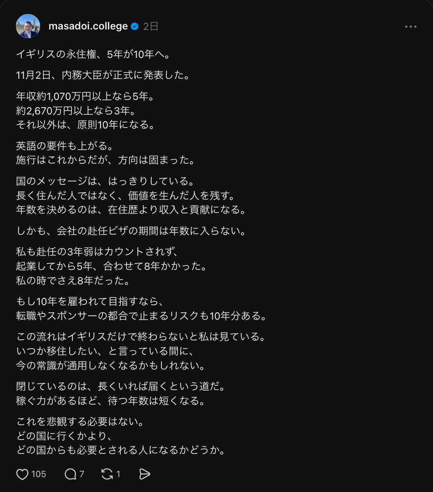

CASE ｜ 土居さんのThreads（@masadoi.college）
Threads、3ヶ月の成果
2026年8月に運用スタート → 11月10日時点
やったこと
ほぼ毎日
投稿
8/15〜11/10の88日間で
72本（71日）
結果① リスト
36件
Threads経由の
LINE登録（8〜10月）
結果② 反応
105いいね
最も伸びた投稿
表示1.6万回
8月から3ヶ月、ほぼ毎日投稿しました（8/15〜11/10で72本）
LINEのリストが積み上がった
投稿のプロフィールリンクから、LINEに登録が入り続けています。
登録経路が「Threads」のLINE登録の累計（UTAGE・8/1〜10/31）
100いいねを超えた投稿
イギリスの永住権、5年が10年へ11月9日

Threadsで開く
毎日出せている仕組み
ナレッジ土居さんの発信と考えを
1か所にまとめる
AIで原稿月ごとにまとめて作る
土居さんが添削上から直して投稿
直された差分を、毎回ナレッジに戻す → 次の原稿が土居さんに近づく
データ：UTAGE（登録経路「Threads」のLINE登録・2026/8/1〜10/31）、X・Threads管理シート（予約済みの投稿・8/15〜11/10）、Threadsの投稿画面（いいね数・表示回数は2026年11月11日に確認）。